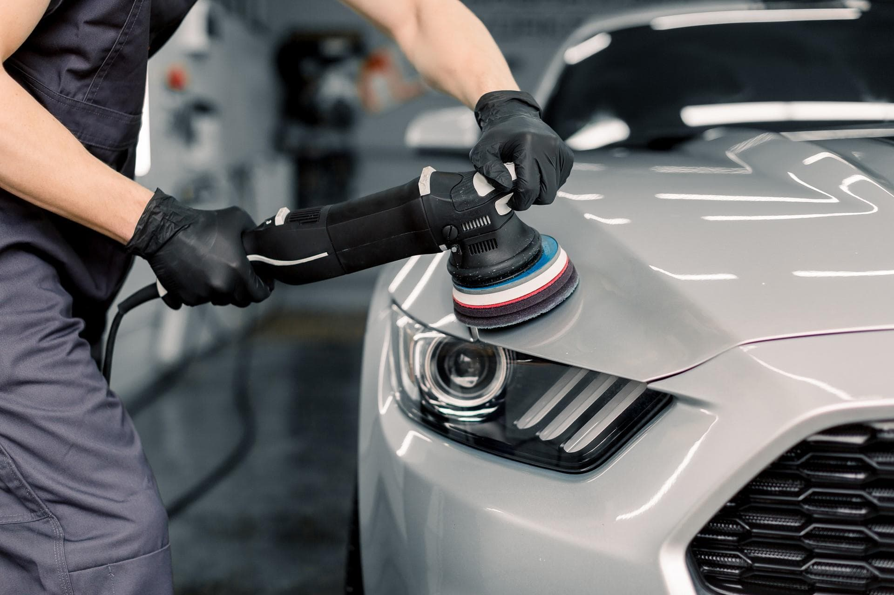

01
Restauración de Focos
Recuperamos la transparencia de los focos opacos o amarillentos, mejorando la estética del vehículo y aumentando la visibilidad durante la conducción nocturna.
En JV Car Detailing ofrecemos soluciones profesionales para mejorar la apariencia, protección y conservación de tu vehículo. Trabajamos con técnicas especializadas y productos de alta calidad para obtener resultados excepcionales.
Recuperamos la transparencia de los focos opacos o amarillentos, mejorando la estética del vehículo y aumentando la visibilidad durante la conducción nocturna.

Eliminamos imperfecciones superficiales, marcas leves y pérdida de brillo para devolverle a la pintura una apariencia renovada y brillante.
Aplicamos protección cerámica para ayudar a conservar el brillo, facilitar la limpieza y proteger la pintura contra agentes externos como el sol, lluvia y contaminación.
Realizamos una limpieza detallada de cada área del vehículo, eliminando suciedad acumulada y mejorando la presentación general tanto en el interior como en el exterior.

Tratamiento especializado enfocado en mejorar el acabado de la pintura, reduciendo defectos visuales como espirales, holograma y oxidación superficial, potenciando el brillo original.
Productos profesionales de alta calidad
Atención personalizada a cada cliente
Resultados de alta calidad garantizados
Protección y cuidado integral del vehículo
Compromiso total con cada trabajo realizado
Contáctenos para conocer más sobre nuestros servicios y recibir una atención personalizada para su vehículo.